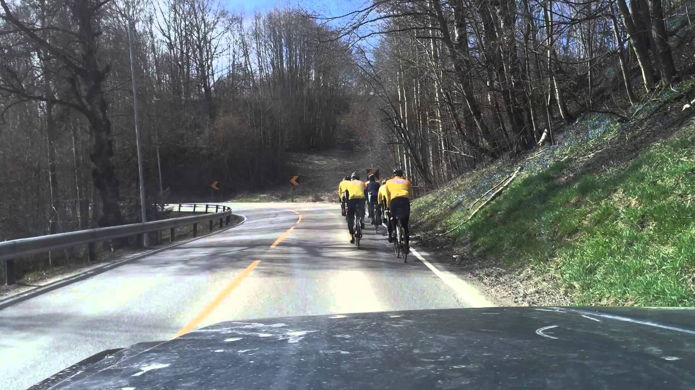
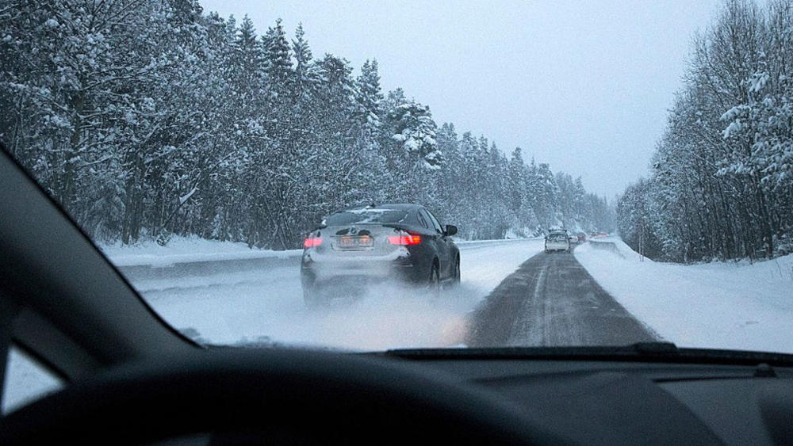
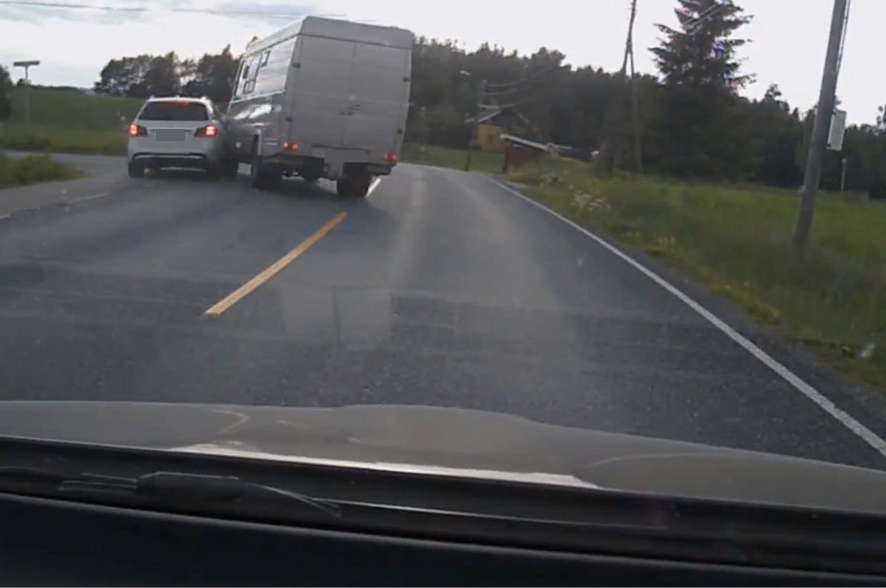
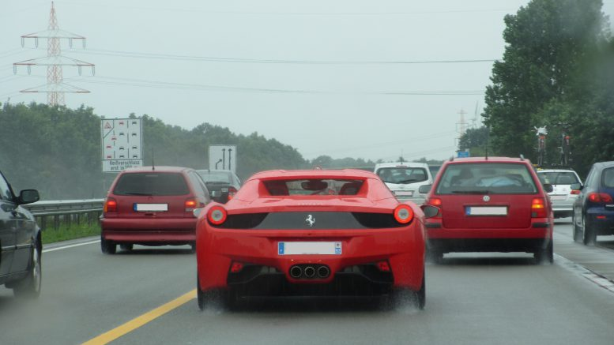

Vedlegg 1
Bildene ligger også som zip på itslearning trafikk.zip
Bilder og tekster som skal passe sammen:


Tekster:
Bussen må stoppe (3)
Bilen kan kjøre (2)
Bussen kan kjøre (1)
Vedlegg 2 Bilder og tekster.
Bilde 1.

Alternativer:
- Tut kraftig med bilhornet slik at syklistene danner en rekke.
- Vent med å kjøre forbi til det blir fri sikt fremover.
- Gass på slik at du rekker å passere før svingen.
Bilde 2

- Den passerende bilisten setter andre trafikanter i unøding fare, det er lang kø.
- Har du kommet litt forbi den bilen du passerer er det bare å svinge inn foran.
- Den passerte bilen burde ha holdt mindre avstand til bilen foran, det er ikke så glatt.
Bilde 3

- Når du skal svinge av en vei er det viktig å blinke og sjekke blindsonen
- Det er viktig å holde høy hastighet når du kjører forbi
- Begge bilførere har ansvar i en forbikjøring
Bilde 4

- Når veimerking som sperrelinje og skilter gir motsatte signaler gjelder det strengeste signalet.
- Du kan selv velge hva som gjelder for deg.
- Sperrelinjer er kun ment for lastebiler.
Bilde 5

- Hvis det er plass mellom to biler er det bare å kjøre på.
- Når man skal kjøre forbi viser man det ved å kjøre nært bilen foran.
- Krysse sperrelinjer er brudd på trafikkreglene.